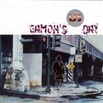

Home Artist links

US - Eamons Day
| Artist: | US |
| Title: | Eamons Day |
| Label: | self produced |
| Length(s): | 6? minutes |
| Year(s) of release: | 2003 |
| Month of review: | [11/2003] |
Line up
Stephan Christiaans - vocals, backing vocals
Jos Wernars - bass, acoustic guitars
Ernest Wernars - keyboards
Paul van Velzen - drums, percussion
Peter de Frankrijker - guitar
Tracks
| 1) | Eamon's Day | 10.16
|
| 2) | Sea Song | 15.33
|
| 3) | Happy Suburbia '78 | 6.03
|
| 4) | The Tunnel | 5.14
|
| 5) | Life In Progress (Phases I To IX) | 27.26
|
Summary
Since their album in the seventies under the name of Saga the band
returned to the prog world as the core of US releasing their
self produced A Sorrow In Our Hearts last year. Soon after we obtain their
latest release with only five songs, but of respectable length.
The major weakpoint of the band in my opinion were the vocals
on the debut, but in Christiaans the band has found a new lead singer.
Surprisingly, the band obtained distribution for the larger record
stores in the Netherlands, shops that carry only a limited amount
of progressive.
The music
Eamon's Day is the opener and it shows the progress the band has made.
Sharp atmospheric guitar lines start it off, to be followed by a melodic
and somewhat mellow passage where the guitar dominates, but the rich
organs also play a role of some note. Comparisons can be made to Camel.
However, starngely enough we first get a melodic bass solo, after
which rich keys set in. This opening introduces the main themes
for this song. The vocal passage is quite strong. Christiaans
has a soothing voice, but he sounds more international than the previous
singer. The rhythm guitar work gives the music a rather dark feel.
The music comes closest, I would guess, to a band such as Flamborough
Head, but stilistically US seems to go for a wider range. Again a bass
solo, which may remind some of Twelfth Night. Good melodic material
and notwithstanding the melodicity, there is still plenty of tension
to make the song interesting as well. The song even gains in power and
emotional strength. Time to relax when the acoustics guitar sets in.
But soon the song powers up again with symphonic keyboards and
rhythm guitar chords. The guitar theme returns towards the end but louder
and higher. Strong stuff, but the ending is strangely abrupt.
Even a bit longer is Sea Song (no not the Robert Wyatt song). Up tempo
symphonic rock with again a strong organ feel. Some of the themes
in the varying passages that haven been juxtaposed have a Spanish
ring. Where Flamborough Head has a strong keyboard component and
Odyssice a strong guitar side, US seems to stay halfway, each of
the instruments dividing the spotlight among them. Again, the vocals
are strongly melodic, and ehm friendly. This song is certainly more
easy-going than the previous one with the acoustic guitars playing
alongside. Halfway time for an atmospheric break with a lone guitar
going softly. Spoken word and a low bass line continue after which the
song sets back in again. Again a bit of Twelfth Night there with some
of the bass work. Genesis is also not very far off here, around the
Trick Of The Tail era. But then for the final few minutes the song
takes quite a different turn and the song becomes dark and brooding
with slightly dissonant guitars and then up-tempo keyboards and
droning rhythm guitars with feedback. The conclusion recaps.
Ballad time on Happy Suburbia '78 with its spaceous acoustics, quite
melodic and open sounding. The vocal passages are melancholic.
Sad and peaceful and quite beautiful too, the ending filled mostly
with keyboards.
The busy The Tunnel continues the positive line with strong melodic
guitar work, but all within the confines of the song. Strumming
acoustic guitar and Camel like melodic electric guitar lines, this is
one of the best songs so far with fast flowing vocal lines.
The middle part is a bit more singersongwriter, afterwards a Genesis
feel sets in again Trick Of The Tail era. Very good.
Life In Progress (Phases I to IX) is the main epic, all of its
twentyseven plus minutes. The opening minute is for the melodramatic
main theme of the song. I can't say that I like all of this long
song (the cheesy keyboards around the five minute mark for instance),
but it does pack a lot of melody and power, with thematic
recurrences, slightly rearranged. The Trick Of The Tail feel
is there again, but not always. Nice acoustic intermezzo's break
the mostly keyboard dominated passages. After that the power goes
up again, but slowly. Not bad, but I like the band more in the
shorter tracks.
Conclusion
A very big step forward from the previous album. The new vocalist, but
even more so the more adventurous and appealling compositions make
this a very attractive album. Their style is a combination of
Trick Of The Tail era Genesis and Camel taken to the nineties,
following in that bands like Flamborough Head, Odyssice, all on Cyclops.
If you are into these bands, then you should certainly go and have a listen. If not then you might still want to hear them, because I
do think the bands packs more variation than the two bands mentioned.
© Jurriaan Hage